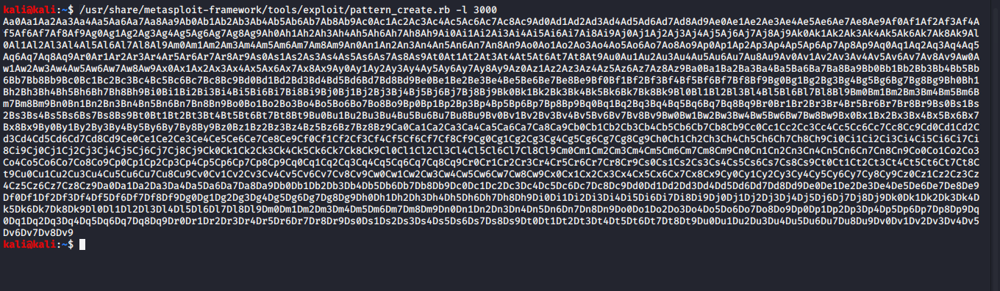

tool is there in kali in msfconsole called as pattern create

ginving it a switch of 3000 coz our vulnserver crashed at arounf 2900 so rounding that off to 3000
copything this code in our script

**change biffer to offset in above code**
so when we run this we will get a value on the eip once the program crashes
and then we ll use tool of metaploit and give it that value to get the offset
run./2.py

thus in eax mai the offset can be seen to be passed
so now it even comes to the esp
so it has ooverwtiren almost everything

this is of the most importance to us

so now exact offset we got byy which wwe can control the eip